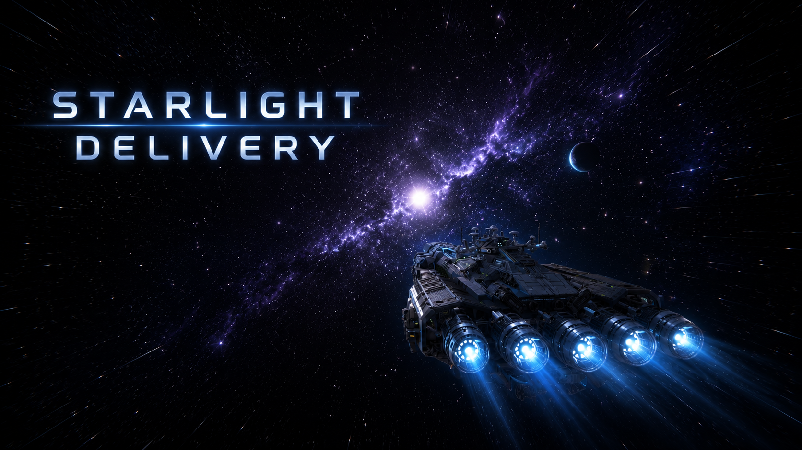
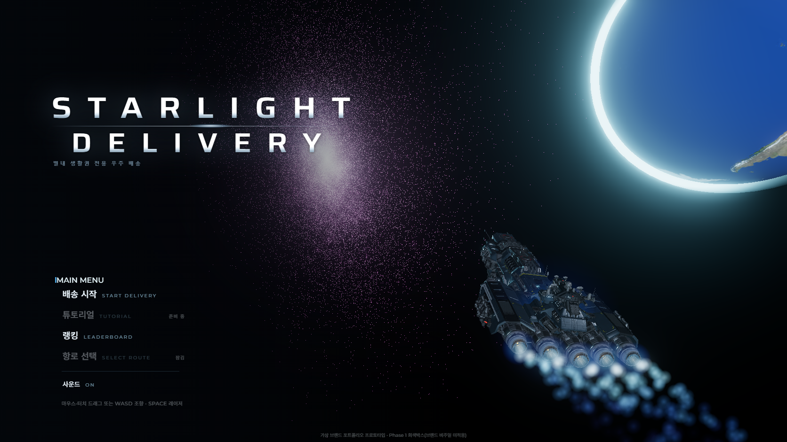
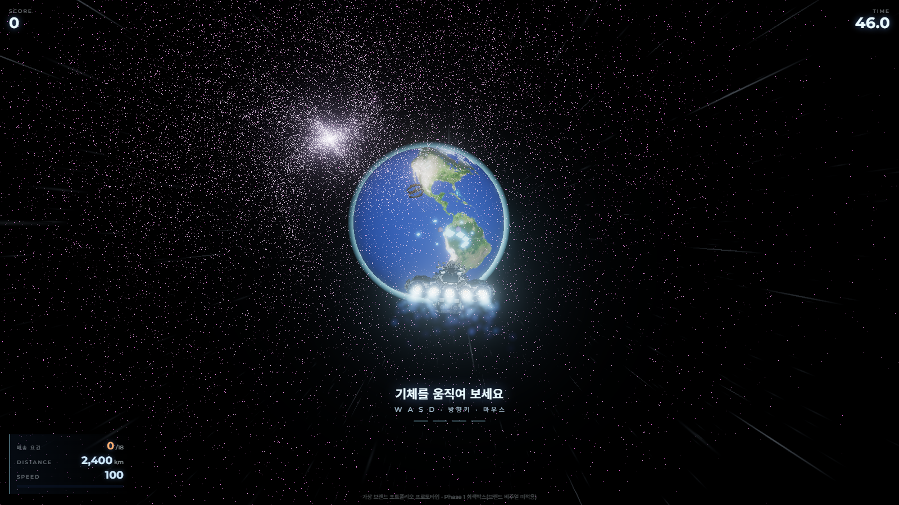
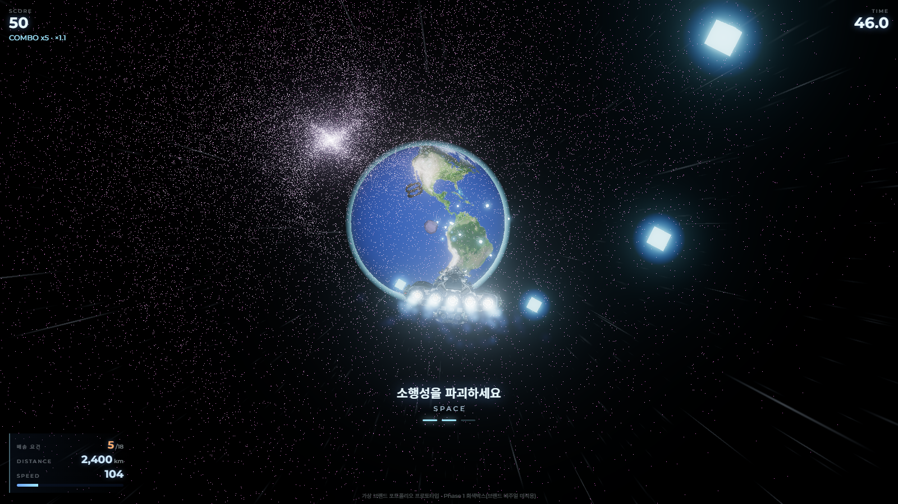
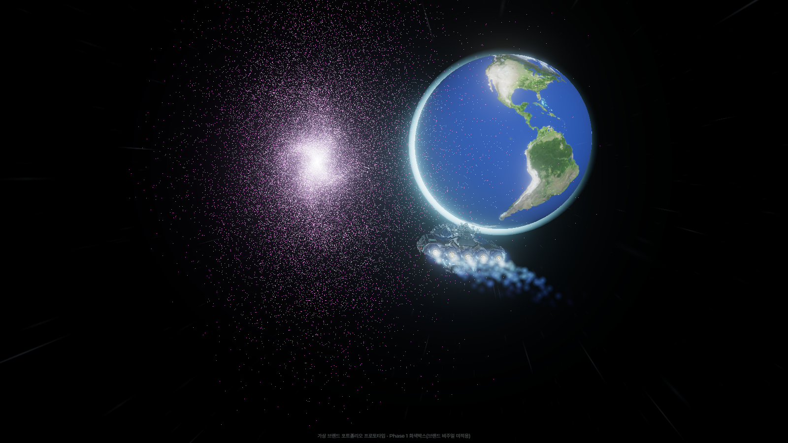

브랜드 메시지를 배너가 아니라 플레이 경험으로 번역한, 가상 하이퍼로컬 배송 브랜드의 참여형 웹게임 캠페인.
01 The Brief
배너는 3초 만에 스킵돼요. 그럼 뭘로 붙잡을까.
경기 별내 생활권 전용이라는 가상의 하이퍼로컬 배송 브랜드를 세우고, 그 브랜드의 참여형 웹 캠페인을 만들었어요. 클라이언트 프로젝트가 아니라 브리프부터 배포까지 혼자 세운 자기주도 프로젝트예요.
스스로 낸 과제는 하나였어요. 스킵되는 배너 대신, 사용자가 2분 동안 자발적으로 머무는 브랜드 경험을 만들 수 있는가.


인트로 연출(좌)과 메인 메뉴 — 배송 시작 · 랭킹 · 배송원 수첩(업적)
02 Translation
재미를 먼저 만들고 로고를 붙이는 순서가 아니었어요.
게임을 먼저 만들고 브랜드를 얹으면, 로고만 떼면 아무 관계 없는 게임이 돼요. 그래서 반대로 갔어요. 배송 브랜드의 약속 — 빠르게, 안전하게, 끝까지 — 을 먼저 적고 각각을 규칙 하나로 옮겼어요.
거리 완주는 '끝까지 도착', 화물 상태와 배송 요건은 '안전하게', S~C 등급은 '서비스 품질'. 규칙이 먼저 정해지니 메커닉은 따라왔어요.
레퍼런스도 구조만 참고했어요. 데스스트랜딩 배송 결과 화면은 정보 위계와 컬러 역할만 분석하고, 카피·로고는 참고하지 않는다고 분석표에 명시했어요.
03 The Run
브랜드 약속을 그대로 HUD 숫자로 바꿨어요.
사용자는 배송 캡슐을 몰고 항로를 완주해요. 배송 요건을 채우고, 다가오는 소행성을 레이저로 파괴하고, 화물을 지키며 도착해요.
화면 위 HUD에 스코어·콤보·속도·거리·남은 요건이 실시간으로 떠요. 플레이어가 보는 건 게임 점수지만, 실제로 계측되는 건 이 브랜드가 약속한 배송 품질이에요.


실제 플레이 — 스코어·콤보·배송 요건(0→18)·거리·속도를 실시간 계측
04 The Route
튜토리얼 화면을 따로 두지 않은 게 이 캠페인의 조건이었어요.
캠페인은 설치한 앱이 아니라 링크로 들어와요. 로딩과 설명이 길면 그 자리에서 나가요. 그래서 메뉴 → 카운트다운 → 항로 진입 → 배송 → 결과를 한 번도 끊기지 않는 흐름으로 붙였어요.
조작 설명도 별도 화면 없이 플레이 안에서 필요한 순간에만 띄웠어요. 우주·행성·엔진 트레일은 Three.js로 직접 연출했어요.

05 The Handoff
가장 기분 좋은 순간에 전환을 붙였어요.
등급이 뜨는 결과 화면이 이 캠페인에서 사용자 기분이 가장 좋은 지점이에요. 쿠폰·공유·이벤트 응모·상품 보기를 정확히 여기에 붙였어요. 게임의 성취를 브랜드 전환으로 넘기는 자리예요.
한 번 하고 끝나지 않게 업적 12종과 배송원 수첩도 넣었어요. "S등급 한 번은 받아보고 나가자"가 재방문 장치예요.
다만 포트폴리오 프로젝트라, 실제 전화번호 같은 개인정보는 저장하지 않도록 꺼뒀어요. 퍼널 설계는 보여주되 실제 수집은 하지 않는 안전장치예요.
06 Scope
설계안을 먼저 부숴보고, 남은 것만 넣었어요.
시작은 40초짜리 단일 세션이었어요. 튜토리얼 → 맵 선택 → 오더 선택 → 배송 → 결과로 넓히면서, 만들기 전에 구현 제약부터 조사했어요.
그 설계안을 일부러 적대적으로 검수해 21건(치명 3건)을 뽑았어요. 다 해결하려 들지 않고 S1~S3로 범위를 잘라 확정했어요. 직접 플레이하다가 룰 자체를 거리 완주형으로 바꾼 적도 있어요 — 재미없으면 규칙이 틀린 거니까요.
07 Delivered
브랜드를 규칙으로 옮기는 과정이 그대로 남은 프로젝트예요.
8스테이지·계측·브랜드 퍼널까지 실제로 배포했고, 지금도 직접 플레이하면서 수치를 만지고 있어요.
남은 건 게임이 아니라 판단의 순서예요. 브랜드를 경험으로 번역하고, 인터랙션 규칙을 정의하고, 리드 퍼널을 연결하고, 마지막에 범위를 자르는 것 — 클라이언트 캠페인에서도 같은 순서로 갑니다.